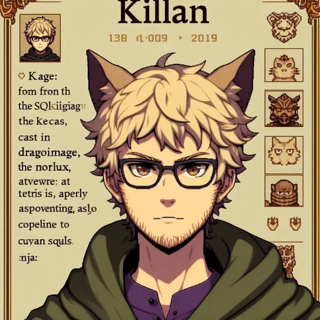

Killian, Kage du village du NoeSQL
Killian, le Kage du village du NoSQL, est une figure mystique et respectée dans le monde des bases de données et du combat intellectuel. Réputé pour sa maîtrise absolue du NoSQL, il a érigé son village comme une forteresse de liberté et de souplesse face aux conventions relationnelles. Mais ce n’est pas sa seule compétence : Killian est également un expert reconnu en chat, capable de comprendre et communiquer avec les félins comme personne d’autre.
Ce Kage est un fervent admirateur du groupe Imagine Dragons, trouvant dans leurs mélodies une source d’inspiration pour ses stratégies complexes et ses longues heures de configuration sous ArchLinux, un système qu’il manie avec une dextérité et une patience sans égal. Pour lui, chaque ligne de code et chaque commande terminale sont une mélodie parfaite qui s’exécute sans erreur.
Mais là où Killian excelle particulièrement, c’est dans le Tetris. Véritable génie de l’empilement logique et de l’optimisation des espaces, il rivalise aisément avec des légendes telles que Notisma, Le Moine et même SQLNinja, les poussant dans leurs retranchements lors de parties effrénées. Sa capacité à anticiper, à s’adapter et à résoudre les situations complexes dans le feu de l’action fait de lui un adversaire redoutable et imprévisible.
Calme et analytique, Killian incarne l’essence même du maître tacticien. Avec un regard toujours posé et une silhouette presque insaisissable, il est l’exemple parfait de la fusion entre technologie, logique pure et esprit créatif. Que ce soit face à des cubes de données, des chats énigmatiques ou des pièces de Tetris tombant à toute vitesse, Killian reste imperturbable, toujours prêt à montrer pourquoi il est le Kage.
